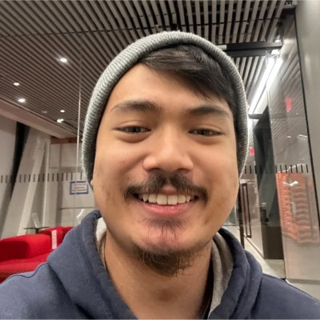

Home

My name is Dillan Pho and I am a fourth year Undergraduate studying Computer Science at Boston University.
I am currently looking for full-time and internship positions to get jumpstarted on my career and I have a great interest in fullstack development and machine learning.
Welcome to my digitized resume, here you'll find my Work Experiences and Educational history which could be of help to you.